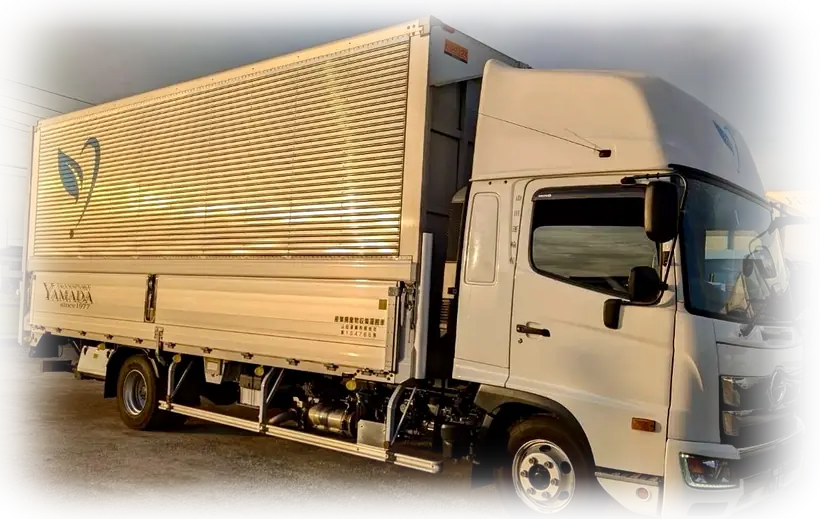

EDUCATION
定期的な安全教育と運行指導
ドライバーの安全運転を支えるため、日々の点呼・車両確認に加え、定期的な安全教育と運行指導を実施します。

SAFETY & QUALITY
教育・健康・現場連携を積み重ね、安心して任せていただける物流をつくります。
OUR STANDARD
創業以来、地域の企業を中心に多くのお客様の物流を支えてきました。長く選ばれてきた理由は、特別な近道ではなく、安全確認や報告、丁寧な作業を日々続けてきたことにあります。
社員が安心して働ける環境を整えることが、お客様へ安定した品質を届けることにつながると考えています。
EDUCATION
ドライバーの安全運転を支えるため、日々の点呼・車両確認に加え、定期的な安全教育と運行指導を実施します。
HEALTH
定期健康診断を通じて体調を確認し、心身ともに無理なく働き続けられる職場環境の維持に取り組みます。
EXPERIENCE
春日部を拠点に約半世紀。お客様ごとの条件や現場の違いに向き合い、信頼と実績を積み重ねてきました。
WORKPLACE
経験や体力、生活に合わせて働き方を相談し、長く力を発揮できる配置とチーム体制を整えています。
PROMISE
作業前・運行前の確認を徹底し、事故や破損を未然に防ぎます。
現場・配車・管理者が状況を共有し、変更やトラブルに迅速に対応します。
荷物と施設を大切に扱い、搬入・設置・回収まで責任を持って進めます。
現場の声と実績を振り返り、より安全で効率的な運用へ改善します。
CONTACT
運用条件や現場環境に合わせた体制をご提案します。